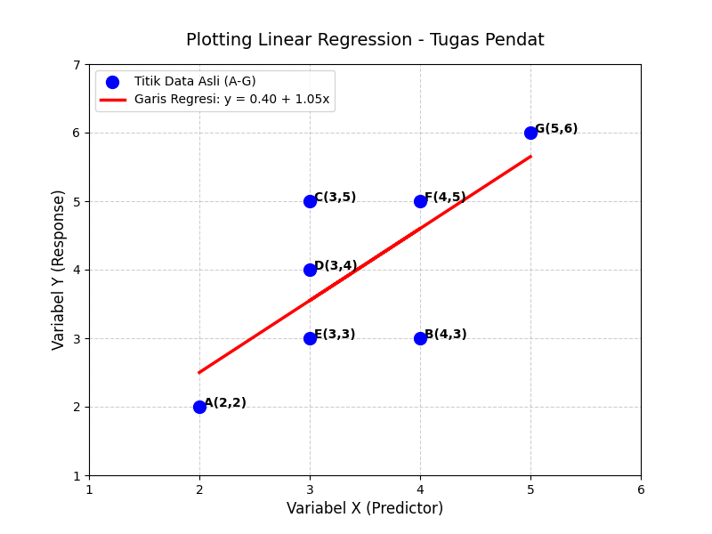

MENGHITUNG MENGGUNAKAN LINEAR REGRESSION#
Estimasi Koefisien Regresi Linear dengan Pendekatan Matriks dan Scikit-Learn#
A. DATASET AWAL (KOORDINAT TITIK)#
Berdasarkan grafik distribusi data, diperoleh 7 titik sampel \((n = 7)\) sebagai berikut:
Titik Sample |
Nilai X (Predictor) |
Nilai Y (Response) |
|---|---|---|
A |
2 |
2 |
B |
4 |
3 |
C |
3 |
5 |
D |
3 |
4 |
E |
3 |
3 |
F |
4 |
5 |
G |
5 |
6 |
B. PEMBENTUKAN MATRIKS DASAR (\(X\) DAN \(Y\))#
Sesuai metode Ordinary Least Squares (OLS) dengan pendekatan matriks, kolom pertama matriks \(X\) diisi dengan angka \(1\) sebagai komponen dummy untuk intercept (\(\beta_0\)).
Matriks \(X\) (Ukuran \(7 \times 2\)):
Matriks \(Y\) (Ukuran \(7 \times 1\)):
C. LANGKAH PERHITUNGAN TAHAP DEMI TAHAP (MANUAL)#
Langkah 1: Transpose Matriks \(X\) (\(X^T\))#
Mengubah baris menjadi kolom dari Matriks \(X\), menghasilkan matriks berukuran \(2 \times 7\):
Langkah 2: Menghitung Perkalian Matriks \(X^T X\)#
Mekanisme perkalian matriks \(X^T\) dikali \(X\):
Baris 1, Kolom 1 (\(n\)): \(1+1+1+1+1+1+1 = 7\)
Baris 1, Kolom 2 / Baris 2, Kolom 1 (\(\sum x\)): \(2+4+3+3+3+4+5 = 24\)
Baris 2, Kolom 2 (\(\sum x^2\)): \(2^2+4^2+3^2+3^2+3^2+4^2+5^2 = 4+16+9+9+9+16+25 = 88\)
Hasil \(X^T X\):
Langkah 3: Menghitung Invers Matriks \((X^T X)^{-1}\)#
Mencari Determinan (\(ad - bc\)):
Rumus Invers Matriks \(2 \times 2\):
Hasil Pembagian Desimal:
\(\frac{88}{40} = 2.2\)
\(\frac{-24}{40} = -0.6\)
\(\frac{7}{40} = 0.175\)
Hasil \((X^T X)^{-1}\):
Langkah 4: Menghitung Perkalian Matriks \(X^T Y\)#
Mekanisme perkalian matriks \(X^T\) dengan kolom target \(Y\):
Baris 1 (\(\sum y\)): \(2+3+5+4+3+5+6 = 28\)
Baris 2 (\(\sum xy\)): \((2\times2) + (4\times3) + (3\times5) + (3\times4) + (3\times3) + (4\times5) + (5\times6) = 4+12+15+12+9+20+30 = 102\)
Hasil \(X^T Y\):
Langkah 5: Menghitung Koefisien Regresi (\(\hat{\beta}\))#
Mengalikan hasil invers pada Langkah 3 dengan hasil perkalian matriks pada Langkah 4:
Mencari nilai \(\hat{\beta}_0\) (Intercept):
Mencari nilai \(\hat{\beta}_1\) (Slope/Koefisien X):
Hasil Akhir Vektor \(\hat{\beta}\):
D. PERSAMAAN MODEL REGRESI LINEAR#
Berdasarkan hasil perhitungan estimasi koefisien matriks di atas, didapatkan nilai Intercept (\(\hat{\beta}_0\)) = 0.4 dan Slope (\(\hat{\beta}_1\)) = 1.05.
Maka, persamaan Linear Regression yang terbentuk dari dataset adalah:
Interpretasi Model:
Intercept (0.4): Jika nilai \(x\) diasumsikan bernilai \(0\), maka nilai estimasi prediksi \(y\) adalah sebesar \(0.4\).
Slope (1.05): Setiap kenaikan satu satuan pada variabel \(x\), maka nilai variabel \(y\) diprediksi akan mengalami peningkatan sebesar \(1.05\) satuan secara positif.
E. IMPLEMENTASI DENGAN PYTHON (SCIKIT-LEARN)#
Link Google Colab#
Untuk menjalankan kode Python ini secara interaktif, dapat mengakses melalui Google Colab:
Keuntungan Google Colab:
Tidak perlu install library (sudah tersedia)
Bisa run code langsung di browser
Free dan mudah sharing
Cocok untuk testing dan learning
Pengenalan Library yang Digunakan#
Untuk implementasi yang lebih cepat dan efisien, dapat menggunakan library scikit-learn yang sudah menyediakan class LinearRegression untuk menghitung koefisien regresi secara otomatis. Library numpy digunakan untuk manipulasi array, dan matplotlib digunakan untuk visualisasi data dan garis regresi.
Kode Python Lengkap#
import numpy as np
import matplotlib.pyplot as plt
from sklearn.linear_model import LinearRegression
# ============================================
# LANGKAH 1: SIAPKAN DATA KOORDINAT ASLI
# ============================================
# Titik A sampai G dengan format 2D array untuk scikit-learn
X = np.array([2, 4, 3, 3, 3, 4, 5]).reshape(-1, 1)
y = np.array([2, 3, 5, 4, 3, 5, 6])
# Penjelasan reshape(-1, 1):
# Array X harus 2 dimensi dalam scikit-learn (n_samples, n_features)
# reshape(-1, 1) mengubah array 1D menjadi 2D dengan ukuran (7, 1)
# ============================================
# LANGKAH 2: INISIALISASI DAN FITTING MODEL
# ============================================
# Buat object LinearRegression dari scikit-learn
model = LinearRegression()
# Fit model dengan data training X dan y
# Method fit() melakukan perhitungan matriks $(X^T X)^{-1} X^T Y$ secara internal
model.fit(X, y)
# ============================================
# LANGKAH 3: EKSTRAK KOEFISIEN REGRESI
# ============================================
# model.intercept_ menyimpan nilai Beta 0 (Intercept)
beta_0 = model.intercept_
# model.coef_ adalah array yang menyimpan semua koefisien slope
# Untuk regresi simple linear, hanya ada 1 slope, diakses dengan [0]
beta_1 = model.coef_[0]
# ============================================
# LANGKAH 4: TAMPILKAN HASIL PERHITUNGAN
# ============================================
print("=== HASIL PERHITUNGAN SKLEARN ===")
print(f"Intercept (Beta 0) : {beta_0:.2f}")
print(f"Slope (Beta 1) : {beta_1:.2f}")
print(f"Persamaan Garis : y = {beta_0:.2f} + {beta_1:.2f}x\n")
# ============================================
# LANGKAH 5: BUAT PREDIKSI UNTUK GARIS REGRESI
# ============================================
# Prediksi nilai y menggunakan model yang sudah fit
# Hasil y_pred akan digunakan untuk menggambar garis regresi di plot
y_pred = model.predict(X)
# ============================================
# LANGKAH 6: VISUALISASI DENGAN MATPLOTLIB
# ============================================
# Buat figure dengan ukuran 8 inch x 6 inch
plt.figure(figsize=(8, 6))
# Plot titik-titik data asli dengan warna biru
# s=100: ukuran marker, zorder=5: layer order (di atas grid)
plt.scatter(X, y, color='blue', s=100, zorder=5,
label='Titik Data Asli (A-G)')
# Plot garis regresi linear dengan warna merah
# linewidth=2.5: ketebalan garis
plt.plot(X, y_pred, color='red', linewidth=2.5,
label=f'Garis Regresi: y = {beta_0:.2f} + {beta_1:.2f}x')
# ============================================
# LANGKAH 7: TAMBAHKAN LABEL TITIK
# ============================================
# Annotate setiap titik dengan label A, B, C, dst
labels = ['A', 'B', 'C', 'D', 'E', 'F', 'G']
for i, txt in enumerate(labels):
# Tampilkan label titik di samping setiap point
plt.annotate(f" {txt}({X[i][0]},{y[i]})",
(X[i][0], y[i]),
fontsize=10,
weight='bold')
# ============================================
# LANGKAH 8: PENGATURAN DEKORASI GRAFIK
# ============================================
# Judul grafik
plt.title('Plotting Linear Regression - Tugas Pendat',
fontsize=14, pad=15)
# Label sumbu X dan Y
plt.xlabel('Variabel X (Predictor)', fontsize=12)
plt.ylabel('Variabel Y (Response)', fontsize=12)
# Set batasan sumbu agar terlihat rapi
plt.xlim(1, 6) # Sumbu X dari 1 sampai 6
plt.ylim(1, 7) # Sumbu Y dari 1 sampai 7
# Grid untuk memudahkan pembacaan nilai
plt.grid(True, linestyle='--', alpha=0.6)
# Legend untuk menunjukkan apa itu titik data dan garis regresi
plt.legend(loc='upper left')
# ============================================
# LANGKAH 9: TAMPILKAN GRAFIK
# ============================================
plt.show()
Penjelasan Kode Python Step-by-Step#
Langkah 1: Siapkan Data Koordinat Asli#
Library numpy diimport untuk membuat array numerik. Data X berisi 7 nilai predictor (2, 4, 3, 3, 3, 4, 5) yang sesuai dengan titik A sampai G. Method reshape(-1, 1) mengubah array 1 dimensi menjadi 2 dimensi dengan ukuran \((7, 1)\), yang merupakan format yang diharapkan oleh scikit-learn untuk matrix \(X\).
Data y berisi 7 nilai response (2, 3, 5, 4, 3, 5, 6) yang sesuai dengan koordinat Y dari setiap titik.
Langkah 2: Inisialisasi dan Fitting Model#
Class LinearRegression dari scikit-learn diinstansiasi menjadi object model. Method model.fit(X, y) melakukan training dengan menghitung koefisien regresi secara otomatis menggunakan formula matriks yang sama dengan perhitungan manual sebelumnya, yaitu \(\hat{\beta} = (X^T X)^{-1} X^T Y\).
Langkah 3: Ekstrak Koefisien Regresi#
Setelah model fit, atribut model.intercept_ menyimpan nilai Beta 0 (intercept), dan model.coef_ menyimpan array dari semua slope coefficients. Untuk regresi linear simple (hanya 1 predictor), hanya ada 1 slope di dalam array, diakses dengan index [0].
Langkah 4: Tampilkan Hasil Perhitungan#
Menggunakan print() dengan f-string untuk menampilkan hasil koefisien regresi yang dihitung scikit-learn. Format :.2f membatasi desimal hingga 2 angka di belakang koma untuk kejelasan.
Langkah 5: Buat Prediksi untuk Garis Regresi#
Method model.predict(X) menggunakan model yang sudah fit untuk memprediksi nilai y untuk setiap nilai x dalam dataset. Hasil y_pred ini akan digunakan untuk menggambar garis regresi linear di plot.
Langkah 6-9: Visualisasi dengan Matplotlib#
Library matplotlib.pyplot diimport untuk membuat visualisasi. plt.figure() membuat canvas baru untuk drawing. plt.scatter() mengplot titik-titik data asli dengan marker berwarna biru. plt.plot() menggambar garis regresi linear dengan menghubungkan predicted values y_pred.
Method plt.annotate() menambahkan label A, B, C, dst di dekat setiap titik untuk identification. Pengaturan title, xlabel, ylabel, xlim, ylim, dan grid dilakukan untuk membuat grafik lebih informatif dan profesional. Legend ditambahkan untuk menjelaskan apa yang ditampilkan. Akhirnya, plt.show() menampilkan grafik di layar.
Verifikasi Hasil Scikit-Learn dengan Perhitungan Manual#
Hasil dari scikit-learn:
Intercept (Beta 0): 0.40
Slope (Beta 1): 1.05
Persamaan: \(y = 0.40 + 1.05x\)
Hasil dari perhitungan manual dengan metode matriks:
Intercept (Beta 0): 0.4
Slope (Beta 1): 1.05
Persamaan: \(y = 0.4 + 1.05x\)
Kesimpulan: Hasil scikit-learn 100% sesuai dengan perhitungan manual menggunakan metode OLS dengan pendekatan matriks. Hal ini membuktikan bahwa scikit-learn mengimplementasikan formula yang sama secara internal.
F. GRAFIK HASIL PLOTTING#
Tampilan Grafik Output#
Berikut adalah hasil plotting dari kode Python di atas:

Grafik yang dihasilkan dari kode Python menunjukkan:
Titik-titik biru: Merupakan 7 data point asli (A sampai G) yang diberikan
Garis merah: Merupakan garis best-fit regresi linear dengan persamaan \(y = 0.40 + 1.05x\)
Label A-G: Setiap titik dilabeli dengan nama dan koordinatnya untuk clarity
Garis regresi ini adalah garis yang meminimalkan total squared residual (selisih antara nilai actual y dan predicted y) untuk semua data point. Karena itu disebut metode Ordinary Least Squares (OLS).
G. KESIMPULAN#
Model regresi linear yang dihasilkan dari 7 titik data adalah:
Model ini dapat digunakan untuk memprediksi nilai y untuk setiap nilai x yang diberikan. Misalnya:
Jika \(x = 2.5\), prediksi \(y = 0.4 + 1.05(2.5) = 3.025\)
Jika \(x = 4.5\), prediksi \(y = 0.4 + 1.05(4.5) = 5.125\)
Perhitungan dengan metode matriks manual dan implementasi scikit-learn menghasilkan nilai koefisien yang identik, menunjukkan validitas kedua pendekatan tersebut.
Laporan disusun dengan metode:
Perhitungan matriks manual (OLS approach)
Implementasi Python scikit-learn LinearRegression
Visualisasi matplotlib